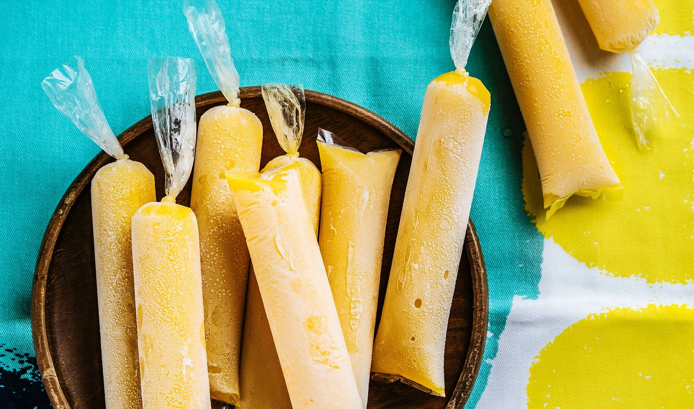

Return to Home
Mango Agogo Recipe (Ice Candy)

Description
Mango Agogo or Mango Ice Candy is a popular Filipino dessert, an ice pop frozen in cellophane bag, and eaten on the go!
Ingredients
- 2 cups water
- 4 mangoes, peeled, pitted, and cubed
- 12 oz evaporated milk
- 1/4 cup cornstarch
- 14 oz condensed milk
- 1/2 cup granulated sugar
Special Equipment
- 20 clear ice candy cellophane bags
- funnel
- blender
Steps:
- Add the water to large saucepan and boil over medium-low heat
- Cut mango into chunks and transfer to a blender.
- Add evaporated milk and blend until smooth
- Add cornstarch to boiling water and stir until dissolved
- Add sugar and condensed milk then slowly pour the blended mango mixture
- Reduce heat to low and simmer for 5 minutes, stirring occasionally until well-combined
- Remove pot from heat and let cool completely for about an hour
- Using funnel pour mango mixture into cellophane bags til 3/4 filled then tie a knot to seal
- Put bags in freezer overnight and its ready to serve!!!